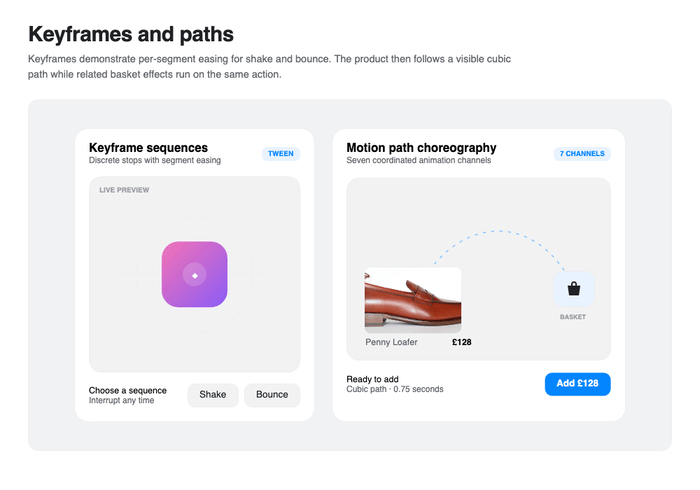
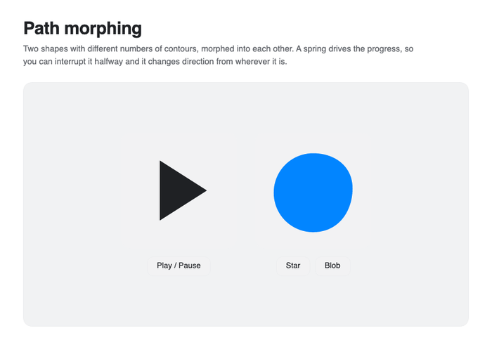
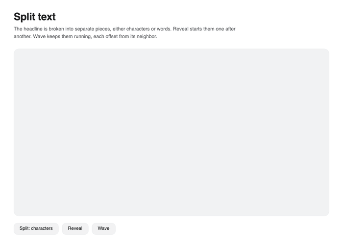
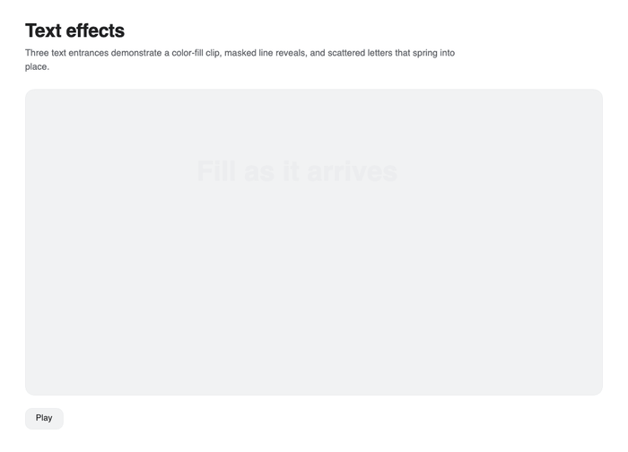
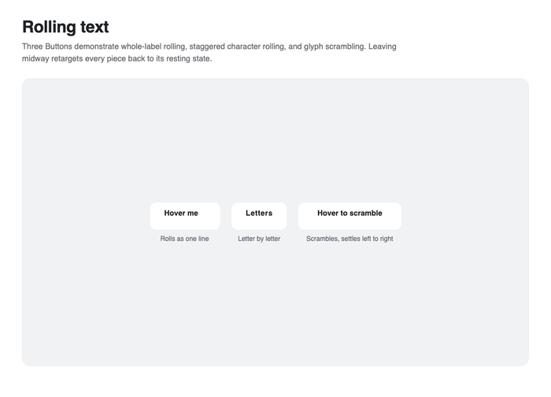
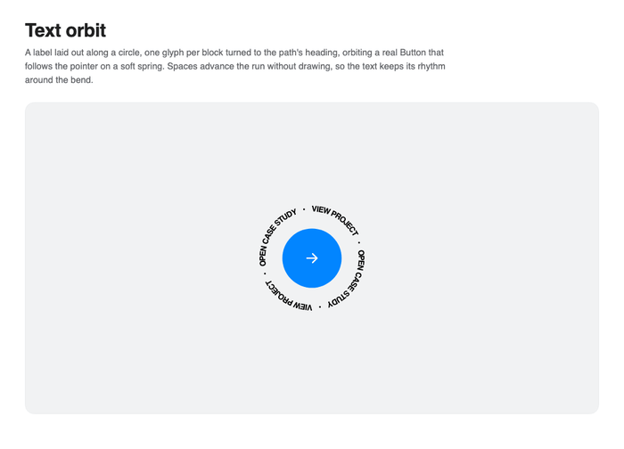

Paths and text
Nova samples paths by arc length so motion, drawing, morphing, and text placement remain stable through uneven curves.
Move along a path
Motion.AlongPath accepts SVG data, an Avalonia Geometry, or a reusable MotionPath. Set orient to rotate the target toward the path tangent.
await Motion.AlongPath(
Plane,
"M 20,180 C 120,20 280,20 380,180",
Tween.EaseInOut(1.2),
offset: new Point(-12, -12),
orient: true);
The attached PathData, PathProgress, PathOffset, and PathOrient properties expose the same positioning for declarative or scrubbed experiences.

Draw a stroke
Set Motion.DrawData on an Avalonia Path, begin at progress zero, and animate DrawProgressProperty like any other double property.
<Path x:Name="Route"
nova:Motion.DrawData="M 10,80 C 120,0 220,160 340,80"
nova:Motion.DrawProgress="0"
Stroke="#7C3AED"
StrokeThickness="4" />
Motion.Animate(Route)
.Property(Motion.DrawProgressProperty, 1d)
.With(Tween.EaseInOut(0.9))
.Start();
Morph SVG paths
MorphPath normalizes and interpolates differently sampled contours. Animate Progress from zero to one; increase Samples when a complex shape needs more detail.
<nova:MorphPath x:Name="Morph"
Width="180" Height="180"
From="M 4,12 L 10,18 L 20,6"
To="M 5,5 L 19,19 M 19,5 L 5,19"
Stroke="#7C3AED"
StrokeThickness="3" />
Motion.Animate(Morph)
.Property(MorphPath.ProgressProperty, 1d)
.With(Spring.Bouncy)
.Start();

Split text
SplitText creates one TextBlock per character, word, or line for independent animation. Pass a template TextBlock to copy font settings.
var pieces = SplitText.Into(Host, "Build motion", SplitBy.Characters, Template);
for (var index = 0; index < pieces.Count; index++)
{
Motion.Jump(pieces[index]).Y(20).Opacity(0);
Motion.Animate(pieces[index])
.Y(0).Opacity(1)
.With(Spring.Smooth)
.WithDelay(index * 0.035)
.Start();
}

The resulting controls use normal Nova channels, so they can rise through clipped line masks, scatter from independent positions, or combine with an animated fill.

Rolling and scrambling text
Rolling labels place repeated text inside a clipped viewport and animate the stack. Split the label into individual clipped stacks for a staggered roll, or use Motion.OnEveryFrame to replace unsettled glyphs until a scramble resolves to its target.

Text on a path
TextPath places glyph controls along a MotionPath. Change the returned layout's Offset from a frame callback to orbit text without a layout pass.
